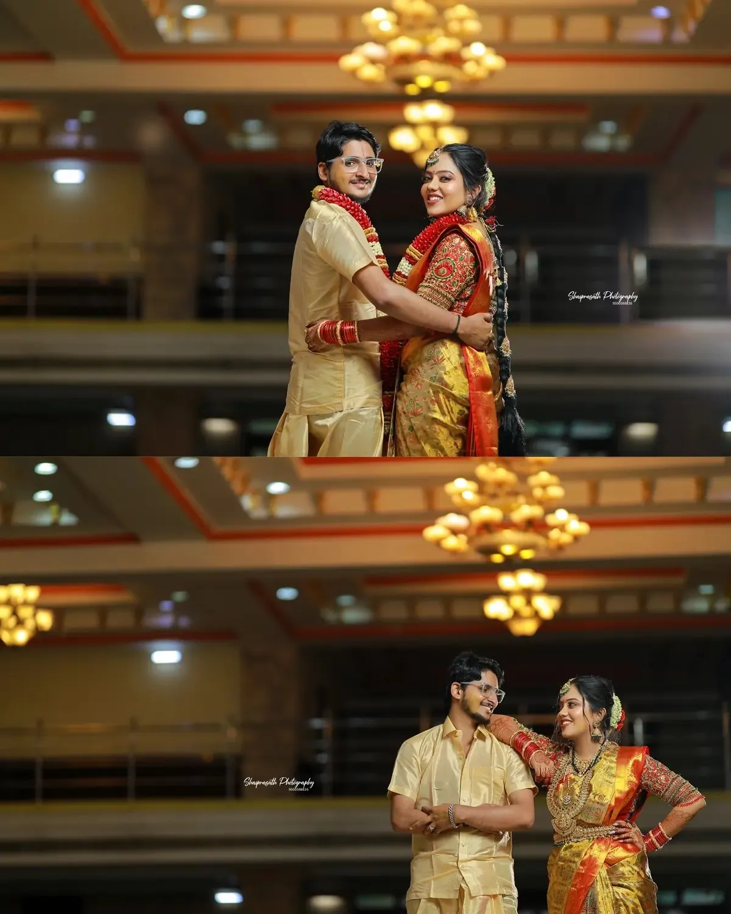
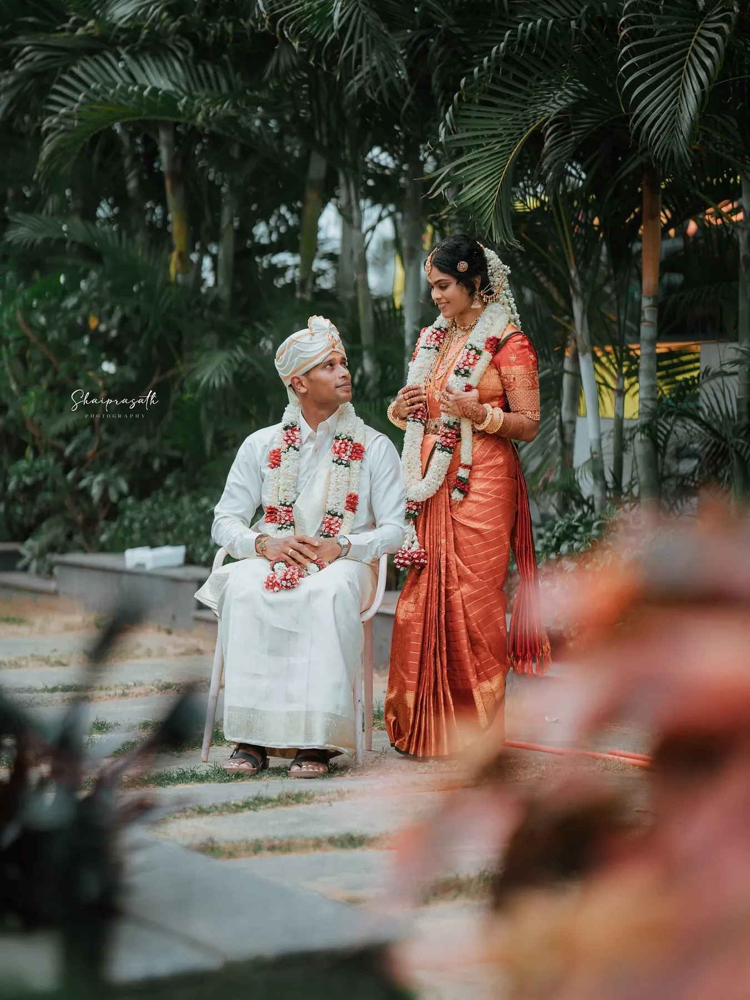
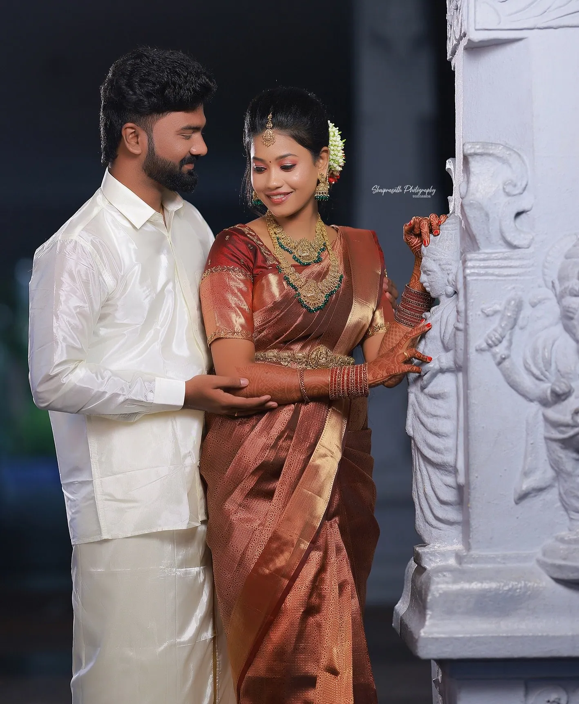
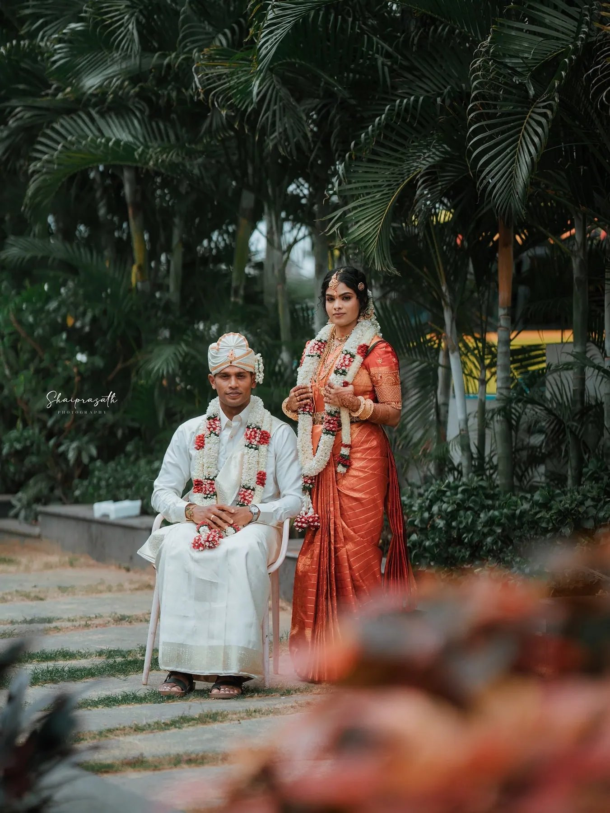
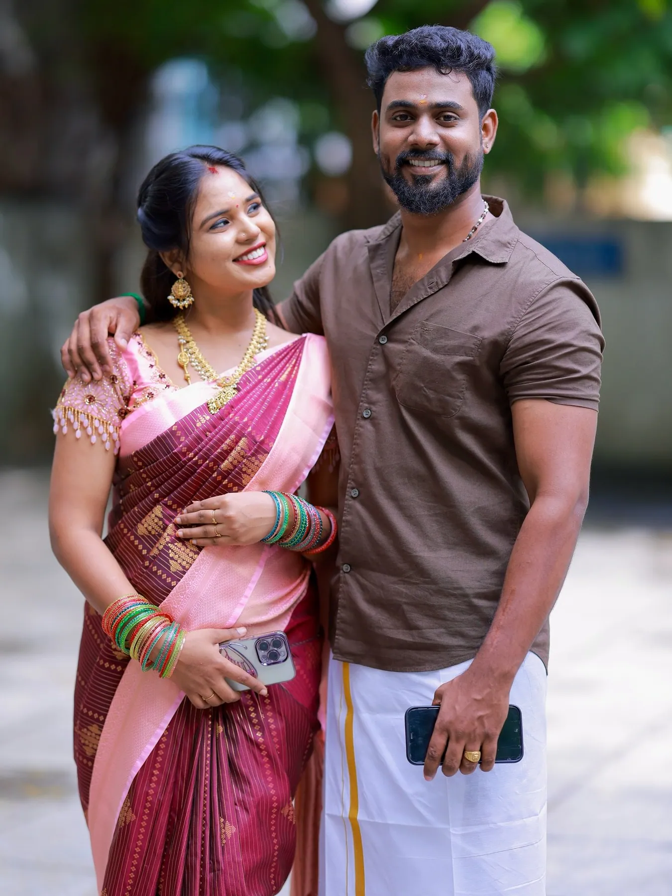
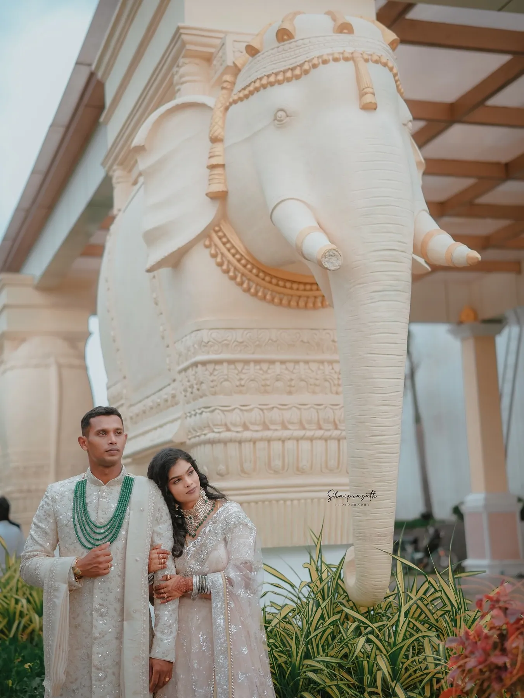
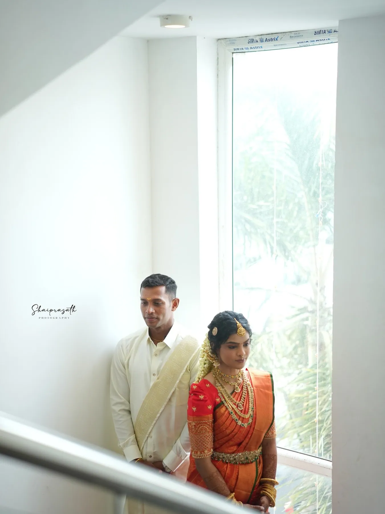
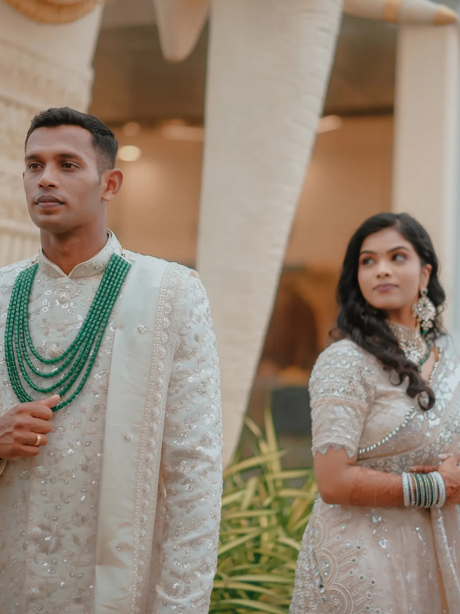
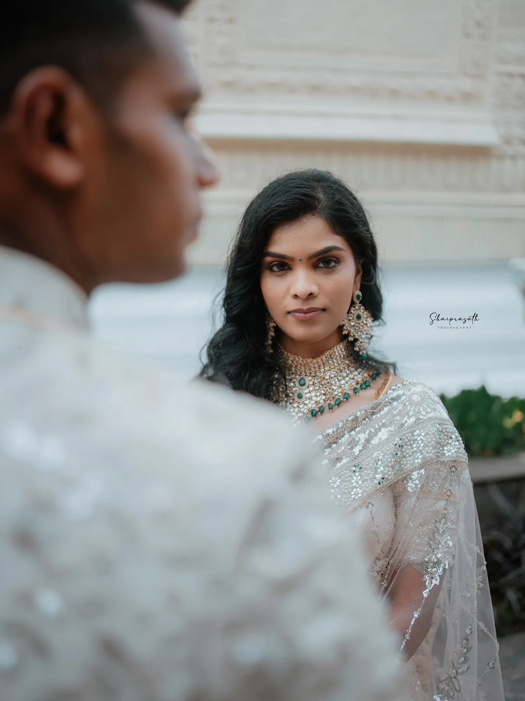
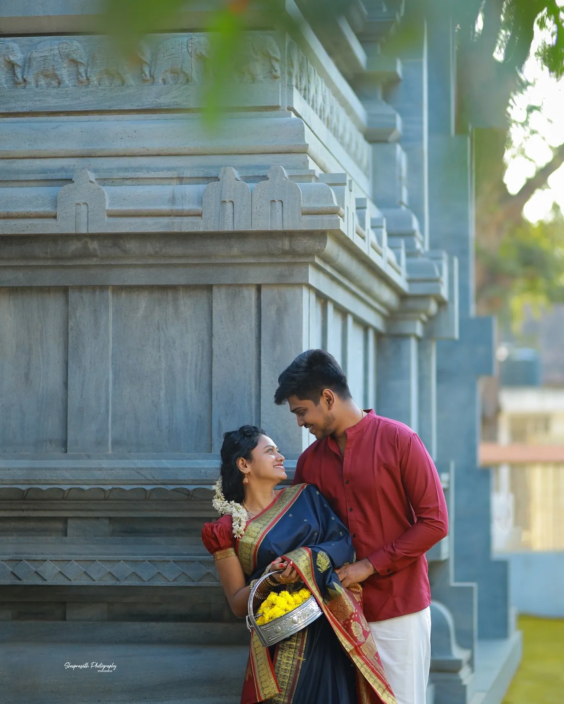

Wedding photography · Coimbatore
Two families, one muhurtham.
Complete wedding stories for Tamil families — candid through the rituals, patient with the portraits, and finished as an album you'll hand down.


Every family does it differently
We learn your order of the day.
Kongu weddings in Coimbatore, Brahmin ceremonies at dawn, Chettiar weddings in their ancestral homes, church services and nikahs.
Before the day we sit down with your families to understand the rituals, who must be photographed with whom, and the moments you'd never forgive us for missing.


The shape of the day
A typical Tamil Hindu wedding, in the order we photograph it.
-
Nichayatharthamநிச்சயதார்த்தம்
The engagement: families, trays of fruit and flowers, rings and the first formal portraits.
-
Getting readyஅலங்காரம்
Silk pleated, jasmine pinned, temple jewellery fastened. Quiet hours that set the tone for the album.
-
Muhurthamமுகூர்த்தம்
The thaali, akshathai rising from every hand, the elders' blessings. Long lenses, little movement, full attention.
-
Couple portraits
Twenty unhurried minutes, usually in a doorway, garden or corridor close to the hall.
-
Receptionவரவேற்பு
Family groups made quickly and kindly, then the candid energy of the evening.











Wedding stories
The full journal
Princess of Hills
Mist on the lake, a horse that wouldn't leave the frame, and a veil caught by the wind.
And So, the Adventure Begins
Orange silk, a cream veshti, and a garden full of relatives.
A Hall of Chandeliers
Red silk, gold veshti and laughter that didn't stop for the photographs.

Vazhithunaiye
A post-wedding walk around an old temple, in veshti and silk.
Bookings & enquiries
Your muhurtham, remembered.
Share your date, the venue and a little about your family. We reply personally — usually with a few questions of our own.
+91 95005 88836